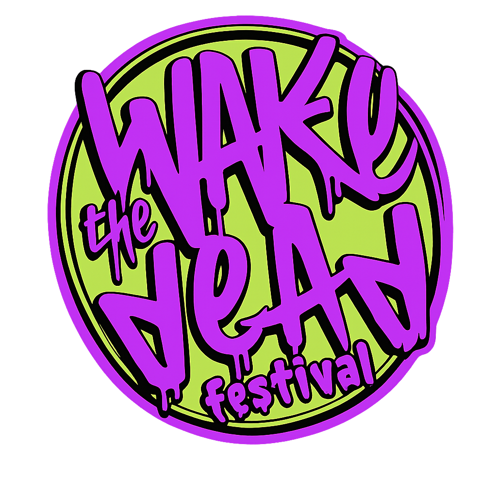

banda1
Headliner do dia 14. Energia bruta e riffs incendiários.
15ª edição

Onde a música desperta o mundo!
Os nomes que abrem o portal da 15ª edição.
Headliner do dia 14. Energia bruta e riffs incendiários.
Headliner do dia 15. Pressão sonora do começo ao fim.
Headliner do dia 16. Clima ritualístico e psicodélico.
Headliner do dia 17. Encerramento épico da edição.
Quatro dias de shows com entrada gratuita - Evento aberto.
Quinta-feira
Sexta-feira
Sábado
Domingo
Line-up em ordem. Atualizaremos com as atrações oficiais.
Produtor, parcerias e a trajetória da cena.
O festival é idealizado e produzido pela equipe responsável por conectar a cena local com novas experiências sonoras.
Parcerias culturais e coletivos independentes fortalecem o alcance e a diversidade da programação.
Há 15 edições, o festival desperta novos públicos e mantém viva a chama do rock autoral.
Rua Adam Blumer, Centro — Magé (Próximo a Praça de São Pedro).
Fácil acesso pelo centro da cidade. Em breve disponibilizaremos mapa e rotas detalhadas.
Espaço reservado para marcas e parceiros.
Instituições responsáveis pela edição.